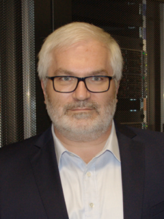

Workshop Abstract
Modern software engineering is getting increasingly complicated. Especially in the HPC field, we are dealing with cutting edge infrastructure and a novel problem with unprecedented scale. The ability to monitor and analyze the performance of such applications and infrastructure is imperative for the future of improvement, design, and maintenance. In the current era, the writing and maintenance of these applications have ceased to be the job solely of computer scientists and have grown to encompass a wide variety of experts in mathematics, science, and other engineering disciplines. The fact that many developers from these disciplines have not received a formal education in computer science and rely increasingly on the tools created by computer scientists to analyze and optimize their code shows that there's a need for a forum to work together.
Workshop Overview
The Workshop on Performance EngineeRing, Modelling, Analysis, and VisualizatiOn STrategy (PERMAVOST) goal is to bridge tools developers and end users of performance analysis tools. It is a half day workshop with a keynote in conjunction with HPDC 2025. We are hoping that the stakeholders, which are application developers, domain scientists, analyst, and tools developers can collaborate and build a bridge to fill in the gaps in various topics such as:
- Key metrics, patterns, and performance pitfalls: Identifying strategies to recognize and leverage performance insights to enhance application efficiency.
- Emerging challenges: Addressing issues arising from new computing architectures, programming paradigms, novel scientific problems, and the processing of data at varying scales.
- Usability in performance tools: Exploring how modern usability design principles can be integrated into performance analysis tools to better support their users.
- Broad-spectrum accessibility: Developing analysis methods and methodologies that cater to users with varying levels of HPC expertise.
Topics of Interest
Our workshop encompasses the following topics of interest, but are not limited to:
- Performance analysis and modeling of real-world applications
- Data visualization for performance analysis
- Usability studies and user-centric design of HPC tools
- Inefficiencies in programming patterns and computing architectures
- Patterns, anomaly detection, and performance characterization in HPC applications
- Performance engineering strategies, methodologies, and use cases
- Human-computer interfaces for performance data exploration
- Energy efficiency and management in performance analysis and engineering
- Performance analysis in emerging HPC domains, including Artificial Intelligence, Machine Learning, Quantum Computing, Containers, and Cloud computing
Call for Paper
All submitted papers should be formatted using the ACM Master Template with sigconf format (please be sure to use the current version). The necessary document can be found here.
General Instructions
- Full 5 page papers (including all text, figures and references)
- Submissions must be in English and PDF format
- Only web-based submissions are allowed. Paper needs to be submitted via PERMAVOST 2025 HotCRP link: https://permavost2025.hotcrp.com
- We use single-blind reviewing process so you can keep authors' names, publications, etc.
- Each paper will get atleast three reviews from the committee members
- The submitted papers must be original work that have not previously been published or under consideration for publication in any other conference or journal
- Accepted papers will be published Open Access in the ACM Digital Library with no additional fee, as part of the workshop proceeding.
Program
Keynote Speech:
|
Xian-He Sun Illinois Institute of Technology, Chicago, USA |
"Dataflow under the von Neumann Machine: A New Paradigm for Computing Systems"
With the exponential growth of big data and AI, computing has become data-centric, making data management the top priority in computing systems. Traditional I/O and storage paradigms no longer meet the demands of data-centric computing. A paradigm shift is necessary to seamlessly integrate high-performance computing power with the velocity, volume, and variety of data to serve diverse AI needs. This keynote explores the critical challenges and introduces a new paradigm, named Dataflow under the von Neumann machine (DataflowV). We first present the Concurrent-AMAT (C-AMAT) model, which quantifies the benefits of concurrent data access and reveals the relationship between data locality and concurrency. Next, we introduce the Layer Performance Matching (LPM) framework to optimize memory system performance and formally introduce the concept of DataflowV. We then share some of our recent practices and successes with the DataflowV paradigm, including the Hermes multi-tiered I/O buffering system and others. Finally, we discuss fundamental issues of performance modeling and data-centric rethinking. The C-AMAT model provides a way to bridge the performance gap at each layer of the memory hierarchy. The LPM framework offers a methodology to optimize a memory system through smart layer optimization. They are powerful, but many fundamental questions remain open. Have we fully utilized modern hardware advances to reach their full potential? Should advanced memory systems be built under a “concurrent-aware locality” model? etc.?
Dr. Xian-He Sun is a University Distinguished Professor, the Ron Hochsprung Endowed Chair of Computer Science, and the director of the Gnosis Research Center for accelerating data-driven discovery at the Illinois Institute of Technology (Illinois Tech). Before joining Illinois Tech, he worked at DoE Ames National Laboratory, at ICASE, NASA Langley Research Center, at Louisiana State University, Baton Rouge, and was an ASEE fellow at Navy Research Laboratories. Dr. Sun is an IEEE fellow and is known for his memory-bounded speedup model, also called Sun-Ni’s Law, for scalable computing. His research interests include high-performance data processing, memory and I/O systems, and performance evaluation and optimization. He has over 350 publications and 7 patents in these areas and is currently leading multiple large software development projects in high performance I/O systems. Dr. Sun is the Editor-in-Chief of the IEEE Transactions on Parallel and Distributed Systems, and a former department chair of the Computer Science Department at Illinois Tech. He received the Golden Core award from IEEE CS society in 2017, the ACM Karsten Schwan Best Paper Award from ACM HPDC in 2019, and the first prize best paper award from ACM/IEEE CCGrid in 2021. More information about Dr. Sun can be found on his web site www.cs.iit.edu/~sun/.
Invited Speech:
|  |
Georg Hager Erlangen National High Performance Computing Center, Germany |
Paper Presentation:
- Assigning Cartesian Grid Area to Processes - A. Astier, D. Sohier, A. Capra
- Performance Evaluation of Machine Learning Applications Using WebAssembly Across Different Programming Languages - S. Khan, T. Malik, K. Hasanov
- Factors Impacting I/O Time Proportion in AI Workloads - Z. Masih, R. Liem, J. Kunkel
- Thicket Workflow for Classifying Parallel Sorting Algorithms - M. McKinsey, D. Yokelson, S. Lam, S. Brink, O. Pearce
*The paper presentation will be followed by Q&A session
Workshop General Chair
Ayesha Afzal - Erlangen National High Performance Computing Center
Program Co-Chairs
- Radita Liem - RWTH Aachen University
- Sarah Neuwirth - Johannes Gutenberg University Mainz
Publicity Chair
Georg Hager - Erlangen National High Performance Computing Center
Program Committee
- Abdel-Hameed Badawy - New Mexico State University
- Amal Gueroudji - Argonne National Laboratory
- Amanda Bienz - The University of New Mexico
- Beth A. Plale - Indiana University Bloomington
- Bertil Schmidt - Johannes Gutenberg University Mainz
- Chih-Kai Huang - Télécom SudParis / IP Paris
- David Bernholdt - Oak Ridge National Laboratory
- Daniel Balouek - INRIA centre at Rennes University
- Dhabaleswar K. (DK) Panda - Ohio University
- Gabriele Jost - Supersmith, Maximum Performance Software
- Jay Lofstead - Sandia National Laboratory
- Jakob Luettgau - INRIA centre at Rennes University
- Jinyang Liu - University of Houston
- Keichi Takahashi - University of Osaka
- Keita Teranishi - Oak Ridge National Laboratory
- Lucas M. Schnorr - Porto Alegre, Rio Grande do Sul
- Mai Zheng - Iowa State University
- Mohammad Alaul Haque Monil - Oak Ridge National Laboratory
- Nathan R. Tallent - Pacific Northwest National Laboratory
- Sandra Gesing - San Diego Supercomputer Center
- Shaikh Arifuzzaman - University of Nevada
- Steven Hofmeyr - Lawrence Berkeley National Laboratory
- Wei (Celia) Xu - Brookhaven National Laboratory
Contact
If you have any problems or questions, please contact the Workshop General Chair Ayesha Afzal via e-mail at: ayesha.afzal@fau.de